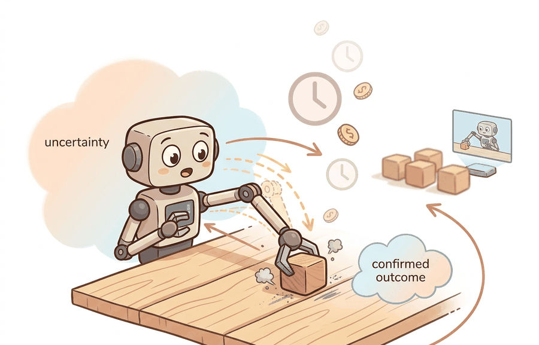

"The fastest robot lesson is the one learned before the robot hits the table."
A Safety-Cased AI Agent

Real-world interaction is the gold standard for embodied evidence, but it is a poor default training loop. Hardware wears out, resets take time, rare failures are expensive, and unsafe exploration is not an acceptable research plan.
For Why real-world learning is slow, costly, and risky, connect the agent-environment boundary, dynamics assumptions, and transfer checks through the simulator artifact actually used in the experiment.
The Real Cost Of Learning By Doing
A real robot trial has hidden costs: setup time, operator attention, reset time, safety review, calibration drift, wear, and the opportunity cost of occupying the platform. Those costs compound when a policy needs thousands or millions of transitions. Even a small desktop robot becomes a bottleneck if each failed grasp requires a human reset.
Simulation matters because it changes the economics of hypothesis testing. A simulated rollout can reject an unstable reward, unsafe action range, brittle controller, or bad observation design before the first hardware trial. The goal is not to avoid reality. The goal is to arrive at reality with sharper hypotheses.
Simulation is central when it moves avoidable mistakes away from hardware and into a falsifiable rehearsal space. Real trials should measure the assumptions that simulation could not settle.
| Cost | What It Means | Why Simulation Helps |
|---|---|---|
| Reset time | Returning the world to a clean initial state | Simulators reset thousands of worlds without a human operator |
| Safety exposure | Collisions, dropped objects, overheated motors, and unsafe motion | Unsafe actions can be bounded and rejected before hardware |
| Coverage | Rare layouts, lighting, friction, and object poses | Randomization can sample edge cases that real collection rarely reaches |
| Debug latency | Time between a failure and a diagnosis | State, contacts, seeds, and policy decisions can be replayed exactly |
Worked Miniature: A Trial Budget
Code Fragment 9.1.1 turns this intuition into a trial ledger. The point is not the exact numbers. The point is that every physical learning loop should expose its time, cost, and risk budget before a policy is trained.
# Estimate the hardware budget before choosing a training loop.
# The calculation makes reset time and safety exposure visible.
trials = 200_000
action_seconds = 2.0
reset_every = 10
reset_seconds = 20.0
operator_cost_per_hour = 45.0
risk_events_per_1000 = 1.5
action_hours = trials * action_seconds / 3600
reset_hours = (trials / reset_every) * reset_seconds / 3600
total_hours = action_hours + reset_hours
operator_cost = total_hours * operator_cost_per_hour
expected_risk_events = trials / 1000 * risk_events_per_1000
print({
"hardware_hours": round(total_hours, 1),
"operator_cost_usd": round(operator_cost, 0),
"expected_risk_events": round(expected_risk_events, 1),
}){'hardware_hours': 222.2, 'operator_cost_usd': 10000.0, 'expected_risk_events': 300.0}Expected output: the ledger shows that 200,000 exploratory steps would occupy about 222 hardware hours, cost roughly $10,000 in operator time, and expose the system to hundreds of expected risk events. Those numbers motivate moving broad exploration into simulation while reserving real trials for calibration and transfer checks.
Consider a specific case: the Dexterous In-Hand Manipulation work from OpenAI (Andrychowicz et al., 2020) trained a policy entirely in MuJoCo with domain randomization across 128 parallel simulation workers, accumulating roughly 100 years of simulated experience before a single hardware trial. The same policy required about 50 real Dactyl robot hours for evaluation and fine-tuning. At the ledger numbers above, 100 simulated years would have cost tens of millions of dollars and an impractical number of resets on physical hardware. Simulation did not replace the real robot; it changed what the real robot was used for, narrowing its role to measuring assumptions the simulator could not settle (contact deformation, tendon compliance, camera latency).
About 18 lines of accounting become a structured experiment budget in tools such as MuJoCo, Isaac Lab, and ManiSkill, where reset frequency, episode length, random seeds, and failure categories can be logged automatically. The hand ledger remains useful because it forces the team to name the real-world cost that simulation is meant to reduce.
What Simulation Can Falsify
A simulator cannot prove that a policy will work in reality. It can falsify many reasons the policy should not be trusted yet. It can show that the action range is unstable, the reward is exploitable, the controller saturates, the perception stack depends on privileged state, or the policy succeeds only for one seed and one friction value.
- Run the simplest policy that should fail, then verify that it fails for the right reason.
- Run the intended policy across held-out seeds, object poses, and perturbations.
- Log failures as perception error, state-estimation error, planning error, control error, simulator mismatch, or metric error.
- Promote only construct-matched, co-computed positive results into paper-facing claims.
For Why real-world learning is slow, costly, and risky, a simulator run becomes evidence only after the falsifiable hypothesis, held-out seeds, perturbation panel, and untested real-world assumption are written down.
Do not treat simulation as permission to ignore safety. Unsafe action spaces, unbounded velocities, and collision-rich exploration should be constrained in simulation first, then bounded again before hardware trials.
Simulation can hide the very costs it is meant to expose. Three failure modes appear repeatedly in practice. First, a policy that exploits a simulator artifact (frictionless floors, zero sensor noise, instant resets) can appear to solve the task while depending on conditions that never exist on hardware. Second, dynamics randomization narrows the sim-to-real gap but does not close it: if the randomization distribution does not cover the real system's contact stiffness or motor latency, the transferred policy degrades silently. Third, because simulated resets are free, researchers sometimes run far more exploration than the real task actually needs, producing policies that are overfit to the simulator's reset distribution rather than calibrated to the start states the hardware will actually encounter.
A lab with one robot arm can run a short real calibration sequence, estimate reset and failure costs, and use simulation for broad exploration. The real robot then becomes a measurement device for specific hypotheses rather than the default source of every exploratory transition.
If a simulated policy knocks over a virtual lamp, the lab learns something. If the real robot does it, the lab also learns who ordered the replacement lamp.
Modern robot-learning systems increasingly combine short real data collection with massive simulated rehearsal. The open research problem is allocating trials across simulation and hardware so that each real trial falsifies a specific simulator assumption.
List the reset time, likely hardware failure, human supervision need, and safety boundary for one embodied task you care about. If any of those are unknown, simulation planning should start with measurement, not training.
Why real-world learning is slow, costly, and risky becomes useful when it is tied to a closed-loop contract. In this chapter on Why Simulation Is Central, the contract names the observation stream, the state estimate, the action representation, the timing budget, and the evaluation artifact. Without that contract, a model can look capable in a notebook while failing the first time a sensor drops a frame or a controller saturates.
For Why real-world learning is slow, costly, and risky, separate the conceptual claim, the systems claim, and the evidence claim. A plausible mechanism, a clean interface, and a closed-loop result are different claims; the section should keep their evidence separate.
| Tool or Library | Role in the Topic | Builder Advice |
|---|---|---|
| Gymnasium | Why real-world learning is slow, costly, and risky | Use it when the experiment needs a maintained implementation rather than custom glue. |
| PettingZoo | Why real-world learning is slow, costly, and risky | Use it when the experiment needs a maintained implementation rather than custom glue. |
| ROS 2 | Why real-world learning is slow, costly, and risky | Use it when the experiment needs a maintained implementation rather than custom glue. |
| MuJoCo | Why real-world learning is slow, costly, and risky | Use it when the experiment needs a maintained implementation rather than custom glue. |
| LeRobot | Why real-world learning is slow, costly, and risky | Use it when the experiment needs a maintained implementation rather than custom glue. |
For Why real-world learning is slow, costly, and risky, start with a small baseline that logs inputs, outputs, units, timestamps, and termination conditions before moving to Gymnasium or PettingZoo. The library run should keep the same artifact schema, so the comparison remains a same-task evaluation.
- Write a one-paragraph task contract with observation, action, success, and failure fields.
- Start with the smallest simulator, dataset, or wrapper that exposes the task contract faithfully.
- Run one deterministic smoke test and one perturbation test before scaling.
- Save a single result artifact containing configuration, seed, metrics, videos or traces, and failure labels.
- Compare methods only when one script evaluates them on the same task panel.
When an experiment about why real-world learning is slow, costly, and risky fails, avoid labeling the whole method as weak. First assign the failure to perception, state estimation, planning, control, timing, data coverage, or evaluation. Then rerun one controlled perturbation that isolates the suspected cause. This pattern turns a disappointing rollout into a reusable diagnostic asset.
Simulation earns its place when it reduces unsafe, slow, or uninformative real-world exploration while preserving the evidence needed for transfer.
For a mobile robot navigation task, estimate the real-world cost of collecting 50,000 exploratory steps. Then specify which part of that collection should move to simulation and which real measurements must remain.
Section 9.2 separates simulation's roles as data generator, testbed, curriculum, and counterfactual probe.
This paper anchors the simulator design lineage behind much modern robot learning. It is useful here because it explains why fast, controllable simulation became central to model-based control and policy testing. Readers should connect this source to why real-world learning is slow, costly, and risky when deciding what is reusable, what is benchmark-specific, and what must be remeasured.
Brockman, G. et al. (2016). "OpenAI Gym." arXiv.
The Gym paper explains the environment API that shaped modern reinforcement-learning experimentation. Readers should use it to understand why reset, step, render, and reward contracts became standard research infrastructure. Readers should connect this source to why real-world learning is slow, costly, and risky when deciding what is reusable, what is benchmark-specific, and what must be remeasured.
Farama Foundation. "Gymnasium Documentation."
Gymnasium is the maintained successor interface for single-agent reinforcement-learning environments. It matters in this chapter because simulation evidence depends on reproducible environment boundaries and seed handling. Readers should connect this source to why real-world learning is slow, costly, and risky when deciding what is reusable, what is benchmark-specific, and what must be remeasured.
NVIDIA. "Isaac Lab Documentation."
Isaac Lab documents a modern robot-learning workflow on top of Isaac Sim. Practitioners should read it when simulation must include vectorized tasks, assets, sensors, and learning-library integration. Readers should connect this source to why real-world learning is slow, costly, and risky when deciding what is reusable, what is benchmark-specific, and what must be remeasured.
This work shows how randomized dynamics can train policies that tolerate physical mismatch. It is a useful bridge from this chapter into later transfer and domain randomization chapters. Readers should connect this source to why real-world learning is slow, costly, and risky when deciding what is reusable, what is benchmark-specific, and what must be remeasured.